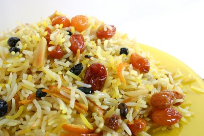

Существуют также вариации между этими двумя видами, которых придерживаются афганцы и таджики, объединяющие обе основные традиции.
Строго говоря, плов это блюдо из зерна и мяса. Зерновой частью чаще всего является рис, значительно реже используется пшеница, горох, джугара, кукуруза и маш. Возможно
использование этих продуктов, как целиком, так и в сочетании с рисом и между собой. Мясная часть традиционно приготавливается из баранины, но может быть и из мяса джейранов, курицы, индейки, курдючной оболочки, фазанов, куропаток, перепелов, воробьев, также из осетрины, севрюги.
Таким образом, для плова вовсе не характерен какой-то строго определенный состав продуктов, но отличительным признаком плова все-таки является: 1. композиция мяса, зерна, сухофруктов и овощей; 2. по технологии раздельное приготовление либо одной части, либо обоих, а затем объединение их для заключительной варки или для употребления в пищу.
Не обязательными для плова являются процесс жарения и использование жиров. Пловы могут быть и из отварного мяса. Но раздельное создание частей и единство композиции – неизменно для всех видов плова.
Очень большое значение в пловах придается вкусу риса и его приготовлению. Поэтому независимо от того, как был приготовлен рис – отварным или в жире вместе с мясом, каждое зернышко риса должно быть отдельным, а не слипаться в кашу. Рис можно готовить либо на пару (азербайджанский плов), либо над зирваком, залитым водой, когда происходит кипение риса в масловодяной среде.
Центральный момент – приготовление зирвака. В зирваке мясо, овощи и сухофрукты проходят одновременную тепловую обработку (обжаривание и тушение), с большим количеством масла или сала, в результате чего масло так сильно насыщается соками мяса, овощей и фруктов, что становится вкусной, ароматной и усвояемой средой, которая и придает блюду основной вкус и запах.
Закладка продуктов для совместной варки в среднеазиатских пловах имеет определенный порядок. На дно казана или котла кладется зирвак, на него утрамбовывается подготовленный рис, а сверху риса наливается слой холодной воды, после чего огонь делают большим. В тот момент, когда вода выкипает, это означает, что плов готов.
Соотношение продуктов в плове может быть различным. Важно только, чтобы соблюдалось равновесие мясной рисовой, овощной и фруктовой частей. Лучшее соотношение, когда все эти части равны.
Используемые в плове жиры разнообразны: бараньи жир и сало, курдючный жир и курдючная оболочка, подсолнечное, кунжутное или оливковое масло. Желательно, чтобы животное и растительное масло были равны по объему.
Плов едят с белым хлебом (лепешками), свежими овощами (зеленый лук, свежие огурцы, чеснок) и кислыми фруктами (вишня, гранат, алыча), запивают черным или зеленым чаем без сахара.